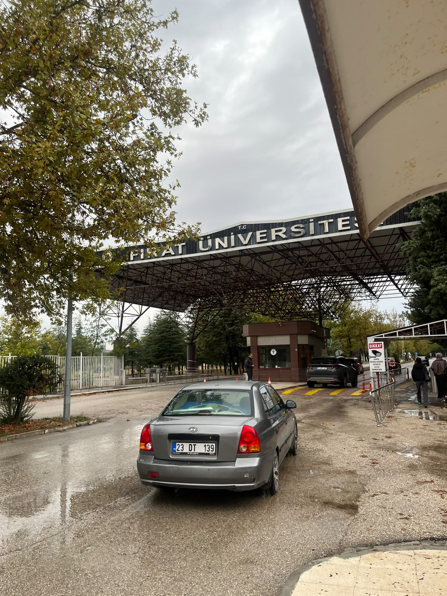

🎓

2023 – 2027
Fırat Üniversitesi
Mühendislik Fakültesi · Yazılım Mühendisliği · 4. Sınıf
Kod yazmayı derslerde öğrendim, üretmeyi ise hocalarımla birlikte imza attığım projelerde.
- C
- C++
- Java
- Python
- PHP
- SQL